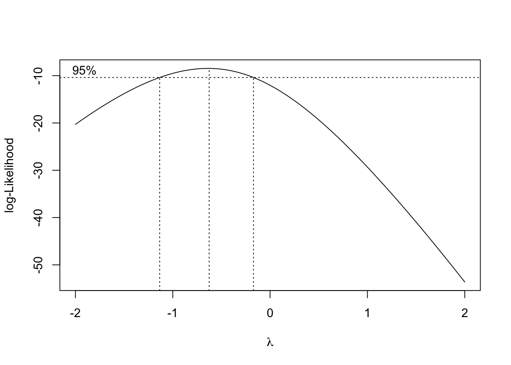

library(emmeans)
library(statforbiology)
dataset <- getAgroData("insects")
model <- lm(log(Count) ~ Insecticide, data = dataset)
emmeans(model, ~Insecticide, type = "response")
## Insecticide response SE df lower.CL upper.CL
## T1 568.6 101.00 12 386.1 837.3
## T2 335.1 59.50 12 227.6 493.5
## T3 51.9 9.22 12 35.2 76.4
##
## Confidence level used: 0.95
## Intervals are back-transformed from the log scaleI am one of those old guys who still uses variance-stabilising transformations when data do not conform to the basic assumptions of ANOVA. Indeed, apart from counts and proportions, where GLMs are extremely useful, I have not yet found a simpler way to deal with heteroscedasticity for continuous variables like yield, weight, height, and so on. Yes, I know, Generalized Least Squares (GLS) can fit heteroscedastic models, but I would argue that stabilising transformations are conceptually much simpler and can be easily taught to PhD students and practitioners with only a basic background in statistics.
The emmeans package gives us a big boost thanks to its elegant handling of back-transformations. For example, in the code box below, I perform an ANOVA on log-transformed data and retrieve the back-transformed means on the original count scale.
It is very straightforward: emmeans() auto-detects the transformation function (when specified inside the model formula) and automatically produces the back-transformation when requested using the type = "response" argument (we can also use regrid = "response", with subtle differences that I will discuss in a future post).
However, not all transformations are automatically detected or built directly into the formula. For example, let’s consider the dataset ‘Hours_to_failure’, included in the ‘statforbiology’ package, which reports the time-to-failure (in hours) for a device as affected by the operating temperature. If we treat temperature as a factor, we can fit an ANOVA model; checking with the boxcox() function from the ‘MASS’ package suggests that this dataset might require an inverse transformation.
library(MASS)
library(emmeans)
library(statforbiology)
dataset <- getAgroData("Hours_to_failure")
dataset$Temp <- factor(dataset$Temp)
head(dataset)
## Temp Hours_to_failure
## 1 1520 1953
## 2 1520 2135
## 3 1520 2471
## 4 1520 4727
## 5 1520 6134
## 6 1520 6314
model <- lm(Hours_to_failure ~ Temp, data = dataset)
tp <- boxcox(model)
As we see below, the inverse transformation is not auto-detected.
model2 <- lm(1/Hours_to_failure ~ Temp, data = dataset)
emmeans(model2, ~ Temp, type = "response")
## Temp emmean SE df lower.CL upper.CL
## 1520 0.000320 9.52e-05 20 0.000121 0.000518
## 1620 0.000579 9.52e-05 20 0.000381 0.000778
## 1660 0.001043 9.52e-05 20 0.000844 0.001241
## 1708 0.001565 9.52e-05 20 0.001366 0.001763
##
## Confidence level used: 0.95In this situation, an alternative approach must be used. After fitting the model with the pre-transformed variable, we can update the ‘reference grid’ for the model, explicitly specifying the transformation used (tran = "inverse"). Finally, we pass the updated grid to the emmeans() function. And… back-transformation is served!
dataset$invHours <- 1/dataset$Hours_to_failure
model3 <- lm(invHours ~ Temp, data = dataset)
updGrid <- update(ref_grid(model3), tran = "inverse")
emmeans(updGrid, ~Temp, type = "response")
## Temp response SE df lower.CL upper.CL
## 1520 3128 932.0 20 1930 8258
## 1620 1726 284.0 20 1285 2626
## 1660 959 87.6 20 806 1185
## 1708 639 38.9 20 567 732
##
## Confidence level used: 0.95
## Intervals are back-transformed from the inverse scaleWe can use this method with several functions, such as: "identity", "1/mu^2", "inverse", "reciprocal", "log10", "log2", "asin.sqrt", and "asinh.sqrt".
Sometimes, however, we need extra flexibility. If we look at the Box-Cox plot above, we see that while the reciprocal/inverse transformation is acceptable (\(\lambda = -1\) falls within the confidence limits), the maximum likelihood estimate for \(\lambda\) is actually -0.62:
ml.lambda <- tp$x[which.max(tp$y)]Therefore, we might prefer to use the exact Box-Cox transformation parameter:
\[W = \frac{Y^{-0.62} - 1}{-0.62}\]
This type of transformation is not manageable with the previous code and we need to use the make.tran() function, specifying the value of \(\lambda\) (alpha = -0.62).
dataset$bcHours <- ((dataset$Hours_to_failure)^(ml.lambda) - 1)/(ml.lambda)
model4 <- lm(bcHours ~ Temp, data = dataset)
updGrid <- update(ref_grid(model4),
tran = make.tran("boxcox", alpha = ml.lambda))
emmeans(updGrid, ~Temp, type = "response")
## Temp response SE df lower.CL upper.CL
## 1520 3262 712.0 20 2186 5573
## 1620 1761 261.0 20 1327 2483
## 1660 974 99.7 20 797 1225
## 1708 641 50.4 20 548 762
##
## Confidence level used: 0.95
## Intervals are back-transformed from the Box-Cox (lambda = -0.626) scaleThe function make.tran() can be used to specify several other transformation functions, such as the angular transformation that is often used for percentages and proportions. We can also use transformations requiring a displacement parameter; you can get a full list by searching help (‘?make.tran’) from inside R.
In conclusion, stabilising transformations, in spite of their age, can still be useful to fit heteroscedastic models; do not underrate them, just because they are no longer in fashion!
Thanks for reading, and happy coding!
(P.S. If you enjoyed this post, check out my book “Field Research Methods in Agriculture: An Introduction with R” via the link below!)
Prof. Andrea Onofri
Department of Agricultural, Food and Environmental Sciences
University of Perugia (Italy)
Send comments to: andrea.onofri@unipg.it

This post was originally published on 2023-11-30